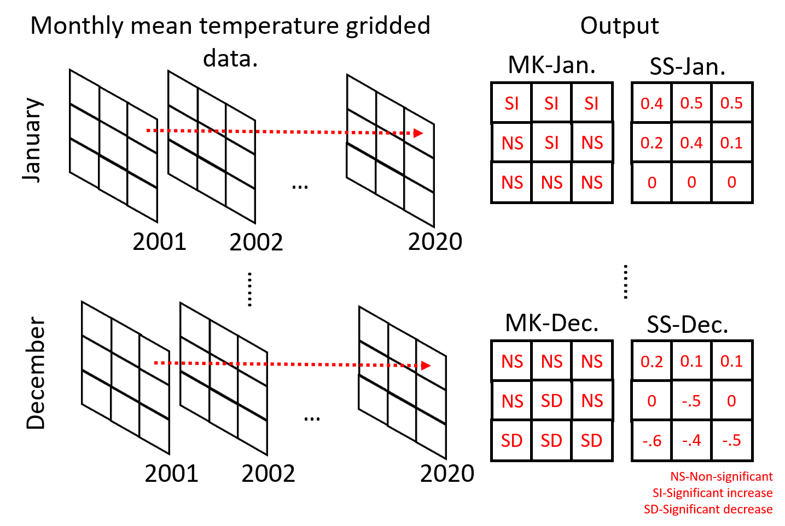

Spatio-temporal trend analysis of temperature using Python#
Tutors: Alexander Kmoch1, Holger Virro1, and Evelyn Uuemaa1
1Landscape Geoinformatics Lab, Chair of Geoinformatics, Department of Geography, University of Tartu
Introduction#
Under the climate change threat, we need to quantify the spatio-temporal trend of temperature and rainfall patterns to understand and evaluate the potential impacts of climate change on ecosystem services, energy fluxes and biogeochemical processes. There are wide range of global or regional scale climate data freely available in a gridded format that can be used for spatio-temporal analysis. These data can be derived directly from satellite remote sensing data or based on reanalysis of weather station time series data. Additionally, some gridded data are also developed by combining time series data from weather stations with remote sensing data.
Aim of the workshop#
The goal of this session is to teach the participants how to handle NetCDF datasets, apply the Mann-Kendall (MK) test and calculate Sen’s slope (SS) values on a gridded climate dataset (please, check additional info below).
We will use the gridded daily mean temperature product from European Climate Assessment and Dataset (E-OBS version v23.1e) (Cornes et al., 2018). E-OBS is developed by interpolating climate data from weather stations provided by the national meteorological agencies of the European countries. The product is available at a grid resolution of 0.1° or 0.25° and covers the period since 1950 to present. For the workshop, we will use the 0.1° resolution dataset (which represents a resolution of about 11 km at the equator) from January 2001 until December 2020 already aggregated into monthly mean temperature (°C). The figure below illustrates how we will calculate MK and SS at pixel scale on monthly basis.
Mann-Kendall test for trend analysis#
Different methodologies have combined spatial data sets and nonparametric statistical methods, such as the Mann-Kendall (MK) (Mann, 1945; Kendall, 1957) test, to infer about the temporal trends of climatic variables time series (Atta-ur-Rahman and Dawood, 2017; Jaagus et al., 2017; Silva Junior et al., 2018). As MK is a nonparametric test, it does not require normal distribution of the data, but it does assume no autocorrelation in the time series.
The MK test has as null hypothesis that the time series has no trend, and the alternative hypothesis is that it does have a trend (upward or downward). The test first calculates the differences between all pairs of earlier and later data points in the time series. After that, it calculates the variance of these differences, which is posteriorly used to calculate the Z test value. Finally, the statistical significance of the trend is quantified by calculating the probability associated with the normalized Z test. If \(Z>0\), it indicates an increasing trend and if \(Z<0\) it indicates a decreasing trend. Usually, the trends are defined as significant using 95% confidence level.
In addition to the trend calculation, it is also possible to quantify the magnitude of the trends. The magnitudes can be estimated by using the nonparametric Sen statistic, more specifically, the Theil–Sen estimator (Sen Pranab Kumar, 1968), which is given by the median of the slopes of each pair of points. To calculate the Sen’s slope, the times series data is ordered accordingly to the time (as function of time) and a confidence interval is provided for each slope value (same as in the MK test).
NetCDF files#
NetCDF is a file format that allows the storage of multidimensional data into a single file archive and has been widely used. Check more info about NetCDF and Python by following this YouTube tutorial produced by Copernicus Marine Service.
Reading the NetCDF file with Xarray#
We will start by importing all Python libraries used in this workshop. Data loading will be handled by Intake. For data processing and wrangling we are going to use the Xarray, Pandas and NumPy libraries. Matplotlib will be used for plotting purposes. Trend analysis will be carried out using the pyMannKendall library.
# Import libraries
# Data loading
import intake
import intake_xarray # Xarray wrapper for Intake
import h5netcdf # for NetCDF reading
# Processing
import xarray as xr
import pandas as pd
import numpy as np
import rioxarray # for CRS management in Xarray
# Trend analysis
import pymannkendall as mk
# Plotting
import matplotlib
import matplotlib.pyplot as plt
import matplotlib.colors as mcolors
import collections
import matplotlib.patches as mpatches
import calendar
Our prepared (smaller) NetCDF data files are located in the online workshop GitHub repository and the file’s metadata is
given in another online metadata file, workshop_catalog.yaml, also located in the workshop’s GitHub
repository.
print('https://raw.githubusercontent.com/LandscapeGeoinformatics/biogeomon_2022_pangeo/main/resources/workshop_catalog.yaml')
https://raw.githubusercontent.com/LandscapeGeoinformatics/biogeomon_2022_pangeo/main/resources/workshop_catalog.yaml
Let us open the catalog file and list its content. We will use the Intake library for loading the data. It allows for convenient data import from external locations.
# Open catalog file
cat = intake.open_catalog('https://raw.githubusercontent.com/LandscapeGeoinformatics/biogeomon_2022_pangeo/main/resources/workshop_catalog.yaml')
list(cat)
['monthly_precip_baltics', 'monthly_temp_baltics']
We are going to use only the temperature file named
monthly_temp_baltics.nc in this workshop. First, let us see the
metadata of this NetCDF.
# Read metadata
temp_data = cat.monthly_temp_baltics
temp_data
monthly_temp_baltics:
args:
urlpath: https://github.com/LandscapeGeoinformatics/biogeomon_2022_pangeo/raw/main/resources/monthly_temp_baltics.nc
description: Monthly temperature data for the Baltics
driver: intake_xarray.netcdf.NetCDFSource
metadata:
catalog_dir: https://raw.githubusercontent.com/LandscapeGeoinformatics/biogeomon_2022_pangeo/main/resources
The metadata includes the parameters * urlpath showing the location
of the NetCDF * the description of the data * driver to be
used when importing the data * catalog_dir showing the catalog file
location
Now we can read the NetCDF with monthly temperature data for the Baltic states in the period 2001–2020. We are going to read the data as an Xarray dataset. The Xarray library allows for convenient manipulation of multidimensional arrays and interaction with the two main data objects—DataArray and Dataset—borrows elements from the Rasterio, Pandas and NumPy Python libraries.
Xarray is a part of the Pangeo big data geoscience environment and is particularly useful for working with large datasets. As our dataset is not quite that big, we will only use some of the main Xarray functionalities for our analysis.
As the driver used for reading the file is already specified in the
catalog, we can simply use read to import the temperature data.
# Import temperature data as an Xarray dataset
temp_ds = temp_data.read()
temp_ds
<xarray.Dataset>
Dimensions: (latitude: 57, longitude: 72, ym: 240)
Coordinates:
* latitude (latitude) float64 53.95 54.05 54.15 ... 59.35 59.45 59.55
* longitude (longitude) float64 21.05 21.15 21.25 ... 27.95 28.05 28.15
* ym (ym) object '2001-01' '2001-02' ... '2020-11' '2020-12'
spatial_ref int32 0
Data variables:
temp_mean (latitude, longitude, ym) float32 nan nan nan ... nan nan nan
Attributes:
grid_mapping: spatial_refOur dataset has three dimensions, each of which has their own set of
coordinates. The spatial dimension is made up of 57 latitude and 72
longitude coordinates, meaning that there are a total of
\(57\times72=4104\) unique locations with temperature information in
the grid. Third dimension ym is an array of all 240 year–month pairs
(e.g. 2001-01) covering the 20 year study period.
The fourth coordinate spatial_ref is not a separate dimension, but
an indicator that a coordinate reference system (CRS) has been assigned
to the data. The grid_mapping attribute of this fourth coordinate
holds information about the CRS of the dataset. If we display the
attrs property then we can see that the CRS in this case is WGS84.
# Display CRS information
display(temp_ds['spatial_ref'].attrs)
{'crs_wkt': 'GEOGCS["WGS 84",DATUM["WGS_1984",SPHEROID["WGS 84",6378137,298.257223563,AUTHORITY["EPSG","7030"]],AUTHORITY["EPSG","6326"]],PRIMEM["Greenwich",0,AUTHORITY["EPSG","8901"]],UNIT["degree",0.0174532925199433,AUTHORITY["EPSG","9122"]],AXIS["Latitude",NORTH],AXIS["Longitude",EAST],AUTHORITY["EPSG","4326"]]',
'semi_major_axis': 6378137.0,
'semi_minor_axis': 6356752.314245179,
'inverse_flattening': 298.257223563,
'reference_ellipsoid_name': 'WGS 84',
'longitude_of_prime_meridian': 0.0,
'prime_meridian_name': 'Greenwich',
'geographic_crs_name': 'WGS 84',
'grid_mapping_name': 'latitude_longitude',
'spatial_ref': 'GEOGCS["WGS 84",DATUM["WGS_1984",SPHEROID["WGS 84",6378137,298.257223563,AUTHORITY["EPSG","7030"]],AUTHORITY["EPSG","6326"]],PRIMEM["Greenwich",0,AUTHORITY["EPSG","8901"]],UNIT["degree",0.0174532925199433,AUTHORITY["EPSG","9122"]],AXIS["Latitude",NORTH],AXIS["Longitude",EAST],AUTHORITY["EPSG","4326"]]'}
Data variable temp_mean contains the monthly temperature amounts of
the Baltics in the period 2001–2020. Since each unique location has a
time series length of 240 months, the variable contains a total of
\(57\times72\times240=984960\) values.
For a quick visualization of our data, let us plot the temperature
amount for January 2001. We can use the sel function and specify the
specific month by using the corresponding coordinate ym. We also
need to include the data variable temp_mean to our plotting call.
# Select a specific month
temp_ds.sel(ym='2001-01')
<xarray.Dataset>
Dimensions: (latitude: 57, longitude: 72)
Coordinates:
* latitude (latitude) float64 53.95 54.05 54.15 ... 59.35 59.45 59.55
* longitude (longitude) float64 21.05 21.15 21.25 ... 27.95 28.05 28.15
ym <U7 '2001-01'
spatial_ref int32 0
Data variables:
temp_mean (latitude, longitude) float32 nan nan nan nan ... nan nan nan
Attributes:
grid_mapping: spatial_ref# Select and plot a specific month
temp_ds.sel(ym='2001-01')['temp_mean'].plot()
<matplotlib.collections.QuadMesh at 0x19f3be9ce80>
Getting data ready for trend analysis#
Now that we have familiarized ourselves with the dataset, let us prepare it for trend analysis.
This preprocessing phase will consist of * Converting the Xarray Dataset into a Pandas DataFrame * Grouping the data by location (grid cell) and month * Extracting the grouped temperature values as a NumPy array
We will start by converting the dataset into a Pandas DataFrame using
the corresponding function to_dataframe. Using reset_index will
flatten the DataFrame, so that we have a separate row for each of our
984960 monthly temperature records.
# Convert the xarray to Pandas DF
temp_df = temp_ds.to_dataframe().reset_index() # flatten
display(temp_df)
| latitude | longitude | ym | temp_mean | spatial_ref | |
|---|---|---|---|---|---|
| 0 | 53.949861 | 21.04986 | 2001-01 | NaN | 0 |
| 1 | 53.949861 | 21.04986 | 2001-02 | NaN | 0 |
| 2 | 53.949861 | 21.04986 | 2001-03 | NaN | 0 |
| 3 | 53.949861 | 21.04986 | 2001-04 | NaN | 0 |
| 4 | 53.949861 | 21.04986 | 2001-05 | NaN | 0 |
| ... | ... | ... | ... | ... | ... |
| 984955 | 59.549861 | 28.14986 | 2020-08 | NaN | 0 |
| 984956 | 59.549861 | 28.14986 | 2020-09 | NaN | 0 |
| 984957 | 59.549861 | 28.14986 | 2020-10 | NaN | 0 |
| 984958 | 59.549861 | 28.14986 | 2020-11 | NaN | 0 |
| 984959 | 59.549861 | 28.14986 | 2020-12 | NaN | 0 |
984960 rows × 5 columns
The input data includes a large number of missing values, indicated by
NaN in the temp_mean column. These are grid cells located
outside the study area (i.e. the Baltic Sea, neighboring countries).
We should remove them with dropna before moving on.
# Drop rows with missing temperature values
temp_df = temp_df.dropna().reset_index()
temp_df
| index | latitude | longitude | ym | temp_mean | spatial_ref | |
|---|---|---|---|---|---|---|
| 0 | 6000 | 53.949861 | 23.54986 | 2001-01 | -1.155484 | 0 |
| 1 | 6001 | 53.949861 | 23.54986 | 2001-02 | -2.777500 | 0 |
| 2 | 6002 | 53.949861 | 23.54986 | 2001-03 | 0.088065 | 0 |
| 3 | 6003 | 53.949861 | 23.54986 | 2001-04 | 8.223666 | 0 |
| 4 | 6004 | 53.949861 | 23.54986 | 2001-05 | 13.019676 | 0 |
| ... | ... | ... | ... | ... | ... | ... |
| 611275 | 980635 | 59.549861 | 26.34986 | 2020-08 | 16.812258 | 0 |
| 611276 | 980636 | 59.549861 | 26.34986 | 2020-09 | 13.711668 | 0 |
| 611277 | 980637 | 59.549861 | 26.34986 | 2020-10 | 9.299999 | 0 |
| 611278 | 980638 | 59.549861 | 26.34986 | 2020-11 | 5.165666 | 0 |
| 611279 | 980639 | 59.549861 | 26.34986 | 2020-12 | 0.163548 | 0 |
611280 rows × 6 columns
Let us also split the ym column into separate year and month
columns for more convenient grouping later on. We can use the function
split for that and specify the delimiter in the original column.
# Extract year and month from the observation date as new columns
temp_df[['year', 'month']] = temp_df['ym'].str.split('-', expand=True) # expand=True tells Pandas that there are two output columns
temp_df['year'] = temp_df['year'].astype(int) # astype(int) will convert string column into integer
temp_df['month'] = temp_df['month'].astype(int)
display(temp_df)
| index | latitude | longitude | ym | temp_mean | spatial_ref | year | month | |
|---|---|---|---|---|---|---|---|---|
| 0 | 6000 | 53.949861 | 23.54986 | 2001-01 | -1.155484 | 0 | 2001 | 1 |
| 1 | 6001 | 53.949861 | 23.54986 | 2001-02 | -2.777500 | 0 | 2001 | 2 |
| 2 | 6002 | 53.949861 | 23.54986 | 2001-03 | 0.088065 | 0 | 2001 | 3 |
| 3 | 6003 | 53.949861 | 23.54986 | 2001-04 | 8.223666 | 0 | 2001 | 4 |
| 4 | 6004 | 53.949861 | 23.54986 | 2001-05 | 13.019676 | 0 | 2001 | 5 |
| ... | ... | ... | ... | ... | ... | ... | ... | ... |
| 611275 | 980635 | 59.549861 | 26.34986 | 2020-08 | 16.812258 | 0 | 2020 | 8 |
| 611276 | 980636 | 59.549861 | 26.34986 | 2020-09 | 13.711668 | 0 | 2020 | 9 |
| 611277 | 980637 | 59.549861 | 26.34986 | 2020-10 | 9.299999 | 0 | 2020 | 10 |
| 611278 | 980638 | 59.549861 | 26.34986 | 2020-11 | 5.165666 | 0 | 2020 | 11 |
| 611279 | 980639 | 59.549861 | 26.34986 | 2020-12 | 0.163548 | 0 | 2020 | 12 |
611280 rows × 8 columns
In order to make sure that the monthly temperature values end up in the
correct order during grouping we should sort the DataFrame by year and
month. This can be done using the sort_values function.
# Sort the DataFrame by year and month in ascending order
temp_df.sort_values(['year', 'month'], ascending=[True, True], inplace=True) # inplace=True tells Pandas to modify the existing object
Now we can aggregate the DataFrame by location and month. We will use
groupby to determine the columns used for grouping and assign
temp_mean as the target column.
Pandas function apply can be used for applying different functions
rowwise in a DataFrame. In this case, we use parameter np.array to
tell apply to collect the grouped temperature values into a NumPy
array for each row.
# Group locations by month and collect observation values to NumPy array
temp_group_df = temp_df\
.groupby(['latitude', 'longitude', 'month'])['temp_mean']\
.apply(np.array)\
.reset_index() # flatten the DataFrame
display(temp_group_df)
| latitude | longitude | month | temp_mean | |
|---|---|---|---|---|
| 0 | 53.949861 | 23.54986 | 1 | [-1.155484, -1.569032, -5.0525813, -6.9348392,... |
| 1 | 53.949861 | 23.54986 | 2 | [-2.7775, 2.2021434, -6.039285, -1.8844824, -5... |
| 2 | 53.949861 | 23.54986 | 3 | [0.08806454, 3.3738706, 0.8622579, 1.8580645, ... |
| 3 | 53.949861 | 23.54986 | 4 | [8.223666, 8.266, 5.5366664, 7.551, 7.8069997,... |
| 4 | 53.949861 | 23.54986 | 5 | [13.019676, 15.822902, 14.108708, 10.822258, 1... |
| ... | ... | ... | ... | ... |
| 30559 | 59.549861 | 26.34986 | 8 | [15.805161, 18.406773, 16.10516, 17.048388, 16... |
| 30560 | 59.549861 | 26.34986 | 9 | [12.335667, 11.58, 11.987667, 12.545667, 13.21... |
| 30561 | 59.549861 | 26.34986 | 10 | [8.4554825, 1.8396775, 4.703548, 6.5590324, 7.... |
| 30562 | 59.549861 | 26.34986 | 11 | [0.766, -1.2219999, 2.9746668, 0.9679999, 3.94... |
| 30563 | 59.549861 | 26.34986 | 12 | [-6.6154838, -7.694516, 0.27806458, 0.46129018... |
30564 rows × 4 columns
Let us check the cell content in the array column for the first row. It contains 20 years worth of monthly temperature mean values for January at 53.9499 latitude and 23.5499 longitude.
We can use iloc to select a DataFrame row by index.
# Display first row
display(temp_group_df.iloc[0])
# Display cell content in the grouped column
display(temp_group_df.iloc[0]['temp_mean'])
latitude 53.949861
longitude 23.54986
month 1
temp_mean [-1.155484, -1.569032, -5.0525813, -6.9348392,...
Name: 0, dtype: object
array([ -1.155484 , -1.569032 , -5.0525813 , -6.9348392 ,
-0.04483882, -7.9774194 , 1.5177417 , -0.8593547 ,
-3.7196774 , -10.487097 , -2.7848382 , -3.04 ,
-5.996774 , -5.3016133 , -0.33290324, -5.7196774 ,
-4.384839 , -1.638387 , -4.256451 , 2.0070968 ],
dtype=float32)
Trend analysis using the Mann-Kendall (MK) test#
Now we have the temperature arrays in a column and can move on with the trend analysis. We are going to use the pyMannKendall library for that.
Although there are 13 different versions of the MK test available in
pyMannKendall, the original_test will suffice for now.
The test will return a tuple containing the named parameters * trend: tells the trend (increasing, decreasing or no trend) * h: True (if trend is present) or False (if the trend is absence) * p: p-value of the significance test * z: normalized test statistics * Tau: Kendall Tau * s: Mann-Kendal’s score * var_s: Variance S * slope: Theil-Sen estimator/slope * intercept: intercept of Kendall-Theil Robust Line
# Check the ouput of the MK test function
array = temp_group_df.iloc[0]['temp_mean']
result = mk.original_test(array, alpha=0.05)
display(result)
Mann_Kendall_Test(trend='no trend', h=False, p=0.9741177473553713, z=0.03244428422615251, Tau=0.010526315789473684, s=2.0, var_s=950.0, slope=0.03997344138858082, intercept=-3.759586398254384)
We will loop over the arrays in the temp_mean column, applying the
MK test each time using apply. Confidence level—0.05 in our case—can
be assigned with parameter alpha.
This can take some time as we need to repeat the process as many times as there are rows, i.e. 30564 iterations in total.
%%time
# Apply MK test rowwise and collect result into new column
temp_group_df['result'] = temp_group_df['temp_mean'].apply(lambda x: mk.original_test(x, alpha=0.05))
display(temp_group_df)
| latitude | longitude | month | temp_mean | result | |
|---|---|---|---|---|---|
| 0 | 53.949861 | 23.54986 | 1 | [-1.155484, -1.569032, -5.0525813, -6.9348392,... | (no trend, False, 0.9741177473553713, 0.032444... |
| 1 | 53.949861 | 23.54986 | 2 | [-2.7775, 2.2021434, -6.039285, -1.8844824, -5... | (no trend, False, 0.2299690777236405, 1.200438... |
| 2 | 53.949861 | 23.54986 | 3 | [0.08806454, 3.3738706, 0.8622579, 1.8580645, ... | (no trend, False, 0.2299690777236405, 1.200438... |
| 3 | 53.949861 | 23.54986 | 4 | [8.223666, 8.266, 5.5366664, 7.551, 7.8069997,... | (no trend, False, 0.7702877264736667, 0.291998... |
| 4 | 53.949861 | 23.54986 | 5 | [13.019676, 15.822902, 14.108708, 10.822258, 1... | (no trend, False, 0.9741177473553713, 0.032444... |
| ... | ... | ... | ... | ... | ... |
| 30559 | 59.549861 | 26.34986 | 8 | [15.805161, 18.406773, 16.10516, 17.048388, 16... | (no trend, False, 0.721176307474874, 0.3568871... |
| 30560 | 59.549861 | 26.34986 | 9 | [12.335667, 11.58, 11.987667, 12.545667, 13.21... | (no trend, False, 0.07435290536856365, 1.78443... |
| 30561 | 59.549861 | 26.34986 | 10 | [8.4554825, 1.8396775, 4.703548, 6.5590324, 7.... | (no trend, False, 0.5376032363488861, 0.616441... |
| 30562 | 59.549861 | 26.34986 | 11 | [0.766, -1.2219999, 2.9746668, 0.9679999, 3.94... | (no trend, False, 0.07435290536856365, 1.78443... |
| 30563 | 59.549861 | 26.34986 | 12 | [-6.6154838, -7.694516, 0.27806458, 0.46129018... | (no trend, False, 0.18344722817247305, 1.33021... |
30564 rows × 5 columns
CPU times: total: 45.2 s
Wall time: 45.6 s
For our purposes, we will only extract parameters trend, p and
slope, which have the indices 0, 2 and 7, respectively.
We can use these indices to extract the parameters into separate columns
from the MK test result column.
temp_group_df['trend'] = temp_group_df['result'].apply(lambda x: x[0])
temp_group_df['p'] = temp_group_df['result'].apply(lambda x: x[2])
temp_group_df['slope'] = temp_group_df['result'].apply(lambda x: x[7])
temp_group_df
| latitude | longitude | month | temp_mean | result | trend | p | slope | |
|---|---|---|---|---|---|---|---|---|
| 0 | 53.949861 | 23.54986 | 1 | [-1.155484, -1.569032, -5.0525813, -6.9348392,... | (no trend, False, 0.9741177473553713, 0.032444... | no trend | 0.974118 | 0.039973 |
| 1 | 53.949861 | 23.54986 | 2 | [-2.7775, 2.2021434, -6.039285, -1.8844824, -5... | (no trend, False, 0.2299690777236405, 1.200438... | no trend | 0.229969 | 0.251141 |
| 2 | 53.949861 | 23.54986 | 3 | [0.08806454, 3.3738706, 0.8622579, 1.8580645, ... | (no trend, False, 0.2299690777236405, 1.200438... | no trend | 0.229969 | 0.135081 |
| 3 | 53.949861 | 23.54986 | 4 | [8.223666, 8.266, 5.5366664, 7.551, 7.8069997,... | (no trend, False, 0.7702877264736667, 0.291998... | no trend | 0.770288 | 0.012048 |
| 4 | 53.949861 | 23.54986 | 5 | [13.019676, 15.822902, 14.108708, 10.822258, 1... | (no trend, False, 0.9741177473553713, 0.032444... | no trend | 0.974118 | 0.000922 |
| ... | ... | ... | ... | ... | ... | ... | ... | ... |
| 30559 | 59.549861 | 26.34986 | 8 | [15.805161, 18.406773, 16.10516, 17.048388, 16... | (no trend, False, 0.721176307474874, 0.3568871... | no trend | 0.721176 | 0.018852 |
| 30560 | 59.549861 | 26.34986 | 9 | [12.335667, 11.58, 11.987667, 12.545667, 13.21... | (no trend, False, 0.07435290536856365, 1.78443... | no trend | 0.074353 | 0.066889 |
| 30561 | 59.549861 | 26.34986 | 10 | [8.4554825, 1.8396775, 4.703548, 6.5590324, 7.... | (no trend, False, 0.5376032363488861, 0.616441... | no trend | 0.537603 | 0.042174 |
| 30562 | 59.549861 | 26.34986 | 11 | [0.766, -1.2219999, 2.9746668, 0.9679999, 3.94... | (no trend, False, 0.07435290536856365, 1.78443... | no trend | 0.074353 | 0.129285 |
| 30563 | 59.549861 | 26.34986 | 12 | [-6.6154838, -7.694516, 0.27806458, 0.46129018... | (no trend, False, 0.18344722817247305, 1.33021... | no trend | 0.183447 | 0.145511 |
30564 rows × 8 columns
We can use Pandas function value_counts to display how many grid
cells ended up in each of the trend classes. We will do this for each
month, so we are going to group temp_group_df again by month and
loop through it.
# Loop through months and display significant trend count
for month, df in temp_group_df.groupby('month'):
print('Siginificant trends in month number ' + str(month))
display(df['trend'].value_counts())
print('\n')
Siginificant trends in month number 1
no trend 2547
Name: trend, dtype: int64
Siginificant trends in month number 2
no trend 2547
Name: trend, dtype: int64
Siginificant trends in month number 3
no trend 2547
Name: trend, dtype: int64
Siginificant trends in month number 4
no trend 2536
increasing 11
Name: trend, dtype: int64
Siginificant trends in month number 5
no trend 2547
Name: trend, dtype: int64
Siginificant trends in month number 6
no trend 1531
increasing 1016
Name: trend, dtype: int64
Siginificant trends in month number 7
no trend 2436
decreasing 111
Name: trend, dtype: int64
Siginificant trends in month number 8
no trend 2547
Name: trend, dtype: int64
Siginificant trends in month number 9
no trend 1589
increasing 958
Name: trend, dtype: int64
Siginificant trends in month number 10
no trend 2469
increasing 78
Name: trend, dtype: int64
Siginificant trends in month number 11
increasing 2067
no trend 480
Name: trend, dtype: int64
Siginificant trends in month number 12
no trend 2543
increasing 4
Name: trend, dtype: int64
We can see that a large majority of locations did not show a significant trend during the study period as most cells indicated no trend.
Next we will convert the parameter trend into a new numeric column,
which is required for plotting later on.
Let us first create a function that assigns a new numeric trend class
based on p and slope. Negative significant trends will be
indicated by -1, positive trends by 1 and 0 will be assigned
to locations where no trend was detected.
# Function for numeric trend conversion
def numeric_trend(slope, p):
if slope < 0 and p < 0.05:
return -1
elif slope > 0 and p < 0.05:
return 1
else:
return 0
Now we can use apply and its lambda parameter to generate the
numeric_trend column. The lambda parameter is useful for
applying a function to each row.
In our case, we are taking the values of columns slope and p for
each row as input parameters for our function numeric_trend, which
we created in the last step. Parameter axis=1 will tell the function
that we are iterating over rows rather than columns.
Some examples of lambda use can be found at
https://pandas.pydata.org/docs/reference/api/pandas.DataFrame.apply.html.
# Create a numeric version of the trend column
temp_group_df['numeric_trend'] = temp_group_df.apply(lambda x: numeric_trend(x['slope'], x['p']), axis=1)
display(temp_group_df)
| latitude | longitude | month | temp_mean | result | trend | p | slope | numeric_trend | |
|---|---|---|---|---|---|---|---|---|---|
| 0 | 53.949861 | 23.54986 | 1 | [-1.155484, -1.569032, -5.0525813, -6.9348392,... | (no trend, False, 0.9741177473553713, 0.032444... | no trend | 0.974118 | 0.039973 | 0 |
| 1 | 53.949861 | 23.54986 | 2 | [-2.7775, 2.2021434, -6.039285, -1.8844824, -5... | (no trend, False, 0.2299690777236405, 1.200438... | no trend | 0.229969 | 0.251141 | 0 |
| 2 | 53.949861 | 23.54986 | 3 | [0.08806454, 3.3738706, 0.8622579, 1.8580645, ... | (no trend, False, 0.2299690777236405, 1.200438... | no trend | 0.229969 | 0.135081 | 0 |
| 3 | 53.949861 | 23.54986 | 4 | [8.223666, 8.266, 5.5366664, 7.551, 7.8069997,... | (no trend, False, 0.7702877264736667, 0.291998... | no trend | 0.770288 | 0.012048 | 0 |
| 4 | 53.949861 | 23.54986 | 5 | [13.019676, 15.822902, 14.108708, 10.822258, 1... | (no trend, False, 0.9741177473553713, 0.032444... | no trend | 0.974118 | 0.000922 | 0 |
| ... | ... | ... | ... | ... | ... | ... | ... | ... | ... |
| 30559 | 59.549861 | 26.34986 | 8 | [15.805161, 18.406773, 16.10516, 17.048388, 16... | (no trend, False, 0.721176307474874, 0.3568871... | no trend | 0.721176 | 0.018852 | 0 |
| 30560 | 59.549861 | 26.34986 | 9 | [12.335667, 11.58, 11.987667, 12.545667, 13.21... | (no trend, False, 0.07435290536856365, 1.78443... | no trend | 0.074353 | 0.066889 | 0 |
| 30561 | 59.549861 | 26.34986 | 10 | [8.4554825, 1.8396775, 4.703548, 6.5590324, 7.... | (no trend, False, 0.5376032363488861, 0.616441... | no trend | 0.537603 | 0.042174 | 0 |
| 30562 | 59.549861 | 26.34986 | 11 | [0.766, -1.2219999, 2.9746668, 0.9679999, 3.94... | (no trend, False, 0.07435290536856365, 1.78443... | no trend | 0.074353 | 0.129285 | 0 |
| 30563 | 59.549861 | 26.34986 | 12 | [-6.6154838, -7.694516, 0.27806458, 0.46129018... | (no trend, False, 0.18344722817247305, 1.33021... | no trend | 0.183447 | 0.145511 | 0 |
30564 rows × 9 columns
Before plotting the trend results we need to convert our DataFrame back
into an Xarray dataset. This can be done with to_xarray, but first
we need to use set_index and assign an index to the DataFrame. The
columns used for the index will end up as dimensions in the resulting
Xarray dataset.
Let us also assign a CRS with write_crs from
rioxarray, which is a
supplementary Xarray library used for spatial operations.
# Convert the DataFrame back to xarray Dataset and assign CRS
temp_group_df.set_index(['latitude', 'longitude', 'month'], inplace=True)
temp_array = temp_group_df.to_xarray()
temp_array.rio.write_crs('epsg:4326', inplace=True)
display(temp_array)
<xarray.Dataset>
Dimensions: (latitude: 57, longitude: 72, month: 12)
Coordinates:
* latitude (latitude) float64 53.95 54.05 54.15 ... 59.35 59.45 59.55
* longitude (longitude) float64 21.05 21.15 21.25 ... 27.95 28.05 28.15
* month (month) int64 1 2 3 4 5 6 7 8 9 10 11 12
spatial_ref int32 0
Data variables:
temp_mean (latitude, longitude, month) object nan nan nan ... nan nan
result (latitude, longitude, month) object nan nan nan ... nan nan
trend (latitude, longitude, month) object nan nan nan ... nan nan
p (latitude, longitude, month) float64 nan nan nan ... nan nan
slope (latitude, longitude, month) float64 nan nan nan ... nan nan
numeric_trend (latitude, longitude, month) float64 nan nan nan ... nan nanPlotting the trend analysis results#
Plotting slopes#
Finally, we can plot our results.
First, let us take a look at the spatial and temporal pattern of the
slope parameter. This will give an idea where and when temperature
has changed the most. The change will be represented in °C/year.
Before plotting, let us create a list of months for the iteration.
# List of months used for iterating
months = temp_array['month']
display(months)
<xarray.DataArray 'month' (month: 12)>
array([ 1, 2, 3, 4, 5, 6, 7, 8, 9, 10, 11, 12], dtype=int64)
Coordinates:
* month (month) int64 1 2 3 4 5 6 7 8 9 10 11 12
spatial_ref int32 0For plotting monthly slope values indicating the intensity of
temperature change, we will create a Matplotlib figure object fig
consisting of a \(4\times3\) grid of axes.
While iterating over each of the 12 months and their corresponding axes
we * will select the corresponding dataset slice from temp_array
using the sel command * plot the slope values for that particular
month * have a colorbar next to the subplots showing the magnitude of
temperature change
# Degree symbol for colorbar
degree_symbol = '$\degree$'
# Create figure and iterate over months to plot slope values in cells
fig, axes = plt.subplots(4, 3, figsize=(12, 10))
for month, ax in zip(months, axes.flatten()):
ds = temp_array.sel(month=month) # select the month
ds['slope'].plot(ax=ax, cmap='RdBu_r', cbar_kwargs={'label': '{}C/year'.format(degree_symbol)}) # plot slope values
month_name = calendar.month_name[int(month)] # get month name
ax.set_title(month_name)
# Add the title
fig_title = 'Median annual temperature change in the Baltics during 2001-2020'
fig.suptitle(fig_title, y=1, size=14)
# Reduce whitespace around the plot
fig.tight_layout()
For setting the range of the colorbar, we need to know the full range of slope values in the data by checking the minimum and maximum values.
display(temp_array['slope'].min())
display(temp_array['slope'].max())
<xarray.DataArray 'slope' ()>
array(-0.17666797)
Coordinates:
spatial_ref int32 0<xarray.DataArray 'slope' ()>
array(0.30160443)
Coordinates:
spatial_ref int32 0We will create a colorbar normalization object called divnorm to set
the range. Using the TwoSlopeNorm command and setting the parameters
vmin=-0.2 and vmax=0.4 should cover the range of slope values.
As our colorbar is diverging, we also need to set vcenter=0.
divnorm = mcolors.TwoSlopeNorm(vmin=-0.2, vcenter=0, vmax=0.4)
We can now recreate the plot with our custom colorbar range by
specifying the norm parameter.
# Degree symbol for colorbar
degree_symbol = '$\degree$'
# Create figure and iterate over months to plot slope values in cells
fig, axes = plt.subplots(4, 3, figsize=(12, 10))
for month, ax in zip(months, axes.flatten()):
ds = temp_array.sel(month=month) # select the month
ds['slope'].plot(ax=ax, cmap='RdBu_r', norm=divnorm, cbar_kwargs={'label': '{}C/year'.format(degree_symbol)}) # plot slope values with custom colorbar range
month_name = calendar.month_name[int(month)] # get month name
ax.set_title(month_name)
# Add the title
fig_title = 'Median annual temperature change in the Baltics during 2001-2020'
fig.suptitle(fig_title, y=1, size=14)
# Reduce whitespace around the plot
fig.tight_layout()
From the plots we can see that majority of the months show an increasing trend, which is the strongest in February and December. Although parts of the Baltics show a slight decreasing trend in other months (e.g. the western part in January), the only month with a clear decreasing trend is July. No clear spatial pattern exists in the detected significant trend locations.
Plotting significant trends#
As we examined above when printing out detected significant trend counts per month, only some grid cells indicated significant trends in the study period. We could also see that the three possible trend classes—decreasing, no trend and increasing— are not present in the case of some months.
To see whether the temperature changes seen in the previous plot were
also statistically significant, we will now plot the numeric_trend
variable. We will use the three numeric trend classes to set the
colorbar. To avoid getting unnecessary ticks in the colorbar, we need to
specify the corresponding parameter in cbar_kwargs.
# Set colorbar range
divnorm = mcolors.TwoSlopeNorm(vmin=-1, vcenter=0, vmax=1)
# Colormap
colors = ['#A89355', '#C8C9CA', '#65C39E']
cmap = matplotlib.colors.ListedColormap(colors)
# Create figure and iterate over months to plot significance of trends in cells
fig, axes = plt.subplots(4, 3, figsize=(12, 10))
for month, ax in zip(months, axes.flatten()):
ds = temp_array.sel(month=month) # select month
ds['numeric_trend'].plot(ax=ax, norm=divnorm, cmap=cmap, cbar_kwargs={'ticks': [-1, 0, 1], 'label': '{}C/year'.format(degree_symbol)}) # plot trends
month_name = calendar.month_name[int(month)] # get month name
ax.set_title(month_name)
# Add the title
fig_title = 'Significance of temperature trends in the Baltics during 2001-2020'
fig.suptitle(fig_title, y=1, size=14)
# Reduce whitespace around the plot
fig.tight_layout()
Although there is no clear temporal or spatial pattern in the significant trends detected, we can see that increasing trends were mostly present in the southern half of the study area, i.e. Latvia and Lithuania. In November, significant increasing trends also reached southern Estonia. The only significant decreasing trends were detected in July, particularly in the eastern part of Estonia.
Perhaps somewhat surprisingly, the winter months with the highest slope values—February and December— did not show up as significant trends.
Automatic plotting#
We have now learned to plot the hard way by customizing the figures manually. Xarray and Matplotlib can actually do certain things for us when plotting, so that quick plots can be displayed with a single line of code.
For this, we use the imshow command and specify the coordinates with
longitude and latitude. The col parameter make sure that we
get a plot for each month. Parameter col_wrap tells Matplotlib to
plot three months per row.
# Plot monthly slope values automatically
temp_array['slope'].plot.imshow('longitude', 'latitude', col='month', col_wrap=3)
<xarray.plot.facetgrid.FacetGrid at 0x14acb42f448>
References#
Atta-ur-Rahman, and Dawood, M. (2017). Spatio-statistical analysis of temperature fluctuation using Mann–Kendall and Sen’s slope approach. Clim. Dyn. 48, 783–797. doi:10.1007/s00382-016-3110-y.
Cornes, R. C., van der Schrier, G., van den Besselaar, E. J. M., and Jones, P. D. (2018). An Ensemble Version of the E-OBS Temperature and temperature Data Sets. J. Geophys. Res. Atmos. 123, 9391–9409. doi:10.1029/2017JD028200.
Jaagus, J., Sepp, M., Tamm, T., Järvet, A., and Mõisja, K. (2017). Trends and regime shifts in climatic conditions and river runoff in Estonia during 1951–2015. Earth Syst. Dyn. 8, 963–976. doi:10.5194/esd-8-963-2017.
Kendall, M. G. (1957). Rank Correlation Methods. Biometrika 44, 298. doi:10.2307/2333282.
Mann, H. B. (1945). Non-Parametric Test Against Trend. Econometrica 13, 245–259. Available at: http://www.economist.com/node/18330371?story%7B_%7Did=18330371.
Sen Pranab Kumar (1968). Estimates of the Regression Coefficient Based on Kendall’s Tau. J. Am. Stat. Assoc. 63, 1379–1389.
Silva Junior, C. H. L., Almeida, C. T., Santos, J. R. N., Anderson, L. O., Aragão, L. E. O. C., and Silva, F. B. (2018). Spatiotemporal rainfall trends in the Brazilian legal Amazon between the years 1998 and 2015. Water (Switzerland) 10, 1–16. doi:10.3390/w10091220.